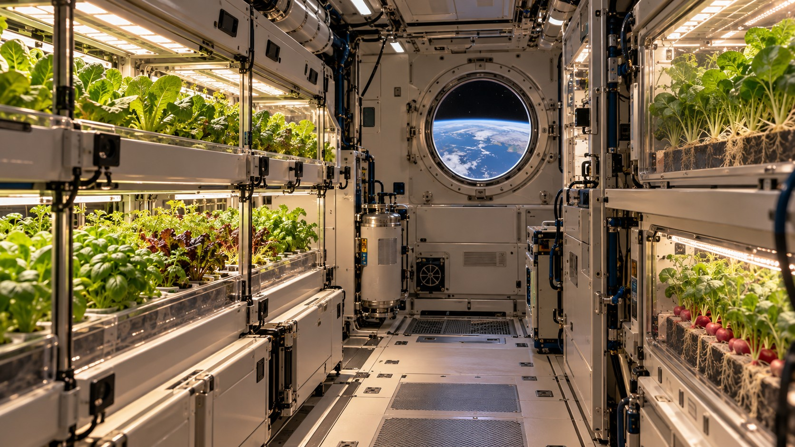

Biology & Future Frontiers
Micro-scale research, life-support thinking and the long-term horizon of space agriculture.
Smart Farm is a meeting point for biology, materials, energy and the technologies that help sustain living systems.
Work with the living environment.
Beneficial bacteria, fungi and suitable insects can contribute to agricultural ecosystems. Soil health, root-zone conditions and the crop’s biological needs belong alongside engineering decisions.
Neipclova’s direction seeks a closer connection between biotechnology and physical systems, with the specific organisms and their role assessed by qualified biological partners.
Explore small-scale properties with measurable questions.
Neipclova’s proposed research direction includes unconventional approaches to changing or managing micro-scale material and interface properties relevant to growing environments.
This is a research interest, not an established explanation for faster growth. Proposed effects must be defined, measured against controls and examined for reproducibility before being represented as demonstrated performance.
Life-support thinking, from Earth to space.
Maintaining plant life brings water, energy, gases, nutrients, sensing and materials into one discussion. Neipclova’s long-term vision extends this systems perspective toward constrained environments and eventual space farming.
Space agriculture is already a field of international research. Our image and narrative express a future direction; they do not describe a Neipclova space deployment or partnership.
A broader research horizon.
The vision also includes possible connections to life-support and future medical-system research. These are longer-term research horizons requiring domain-specific expertise and evidence.
Our practical starting point remains clear: build crop-specific evidence, conserve resources and connect the right expertise from cultivation to packaging.
Explore NASA’s Space Crops researchExplore soil biodiversity with FAO
LET’S EXPLORE THIS FIELD
Every growing idea
starts somewhere.
Tell us about your crop, your space and your next step.